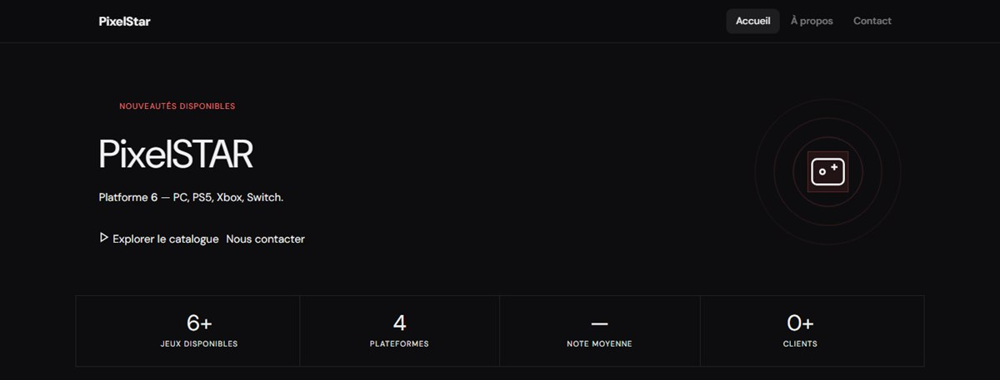

Projet BTS individuel · En coursPixelStar
Site web dynamique de vente de jeux vidéo (PC, PS5, Xbox, Switch) : catalogue lu dans une base MySQL, filtre par genre, notes des joueurs et page de contact.
- PHP
- PDO
- MySQL
- HTML / CSS
PixelStar — boutique de jeux vidéo
Site web dynamique en PHP pour une boutique de jeux vidéo multiplateforme. Les jeux, les genres et les avis sont enregistrés dans une base de données MySQL.
- Contexte
- Projet de BTS SIO en développement web
- Période
- Depuis mai 2026
- Équipe
- Projet individuel
- Compétences BTS
- Tableau de synthèse
Fonctionnalités réalisées
- Navigation entre les pages (Accueil, À propos, Contact) avec un routeur PHP et une page 404
- En-tête et pied de page réutilisables
- Catalogue des jeux mis en avant, filtre par genre, note moyenne et nombre d'avis
- Statistiques : nombre de jeux, note moyenne, clients
- Formulaire de contact avec vérification des champs et de l'adresse e-mail
Base de données
- Tables jeux, genres, utilisateurs, avis, commandes et panier
- Relation plusieurs-à-plusieurs entre jeux et genres (table game_genres)
- Requêtes avec jointures et calculs (AVG, COUNT) et vues SQL
Prochaines étapes
- Inscription et connexion des utilisateurs
- Panier et passage de commande